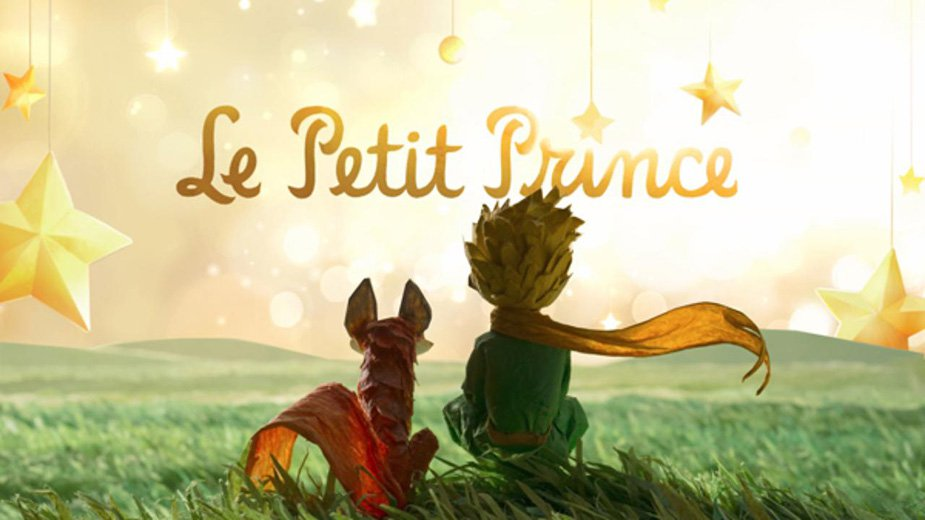

Đây là cuốn truyện mà nhiều người cho rằng thơ mộng nhất đã từng được viết, không hẳn chỉ là cuốn truyện viết cho trẻ em. Nó là một bản tuyên ngôn đặc sắc của chủ nghĩa nhân đạo, một tiếng chuông cảnh tỉnh trước hiểm họa lớn lao của hành tinh trước sự điên rồ của những kẻ cuồng tín. Song trên hết, đây là một cuốn sách ca ngợi tình yêu và cái đẹp, niềm hy vọng lớn của con người. Sự giản dị trong sáng toả khắp tác phẩm đã khiến nó trở nên một bài thơ bất hủ mà mãi mãi người ta muốn đem làm quà tặng của tình yêu. Một bài thơ mà cho dù người ta đã đọc hàng trăm lần vẫn thấy lòng rạo rực mỗi khi đọc lại, cũng như mọi tác phẩm khác mà SaintExupéry đã để lại. Ông là một con người không chỉ nói và viết, một con người tin tưởng và sống như những gì mình nói và viết, chết thơ mộng như những gì mình ca ngợi.
Hồi lên sáu, có lần tôi đã nhìn thấy một bức tranh tuyệt đẹp trong một cuốn sách nói về Rừng hoang nhan đề "Những chuyện có thật". Nó vẽ một con trăn đang nuốt một con thú. Đây là bản sao của bức tranh đó.
Người ta nói trong sách: "Con trăn nuốt chửng cả con mồi mà không nhai. Sau đó nó không thể nhúc nhích được nữa và nó nằm ngủ sáu tháng liền trong khi chờ tiêu hoá." Từ đó tôi hay nghĩ đến các cuộc phiêu lưu trong rừng rậm, và đến lượt tôi, với một cây bút chì màu, tôi đã vẽ được bức phác thảo đầu tiên. Bức phác thảo đầu tiền của tôi. Nó như thế này
Tôi đã sống cô đơn như vậy đó, chẳng có ai để chuyện trò thực sự, cho đến khi máy bay của tôi bị hỏng giữa sa mạc Sahara, cách đây sáu năm. Có cái gì đó trong động cơ của tôi bị gãy. Và tôi chỉ đi một mình không có hành khách cũng chẳng có thợ máy, tôi phải một mình bắt đầu cuộc sửa chữa khó khăn. Đấy là vấn đề sống chết với tôi. Tôi chỉ có đủ nước để uống trong nhiều nhất là tám ngày. Đêm đầu tiên vậy là tôi phải ngủ trên cát ở cách xa nơi người ở hàng ngàn dặm. Lúc đó tôi còn cô độc hơn cả một kẻ đắm tàu trên chiếc bè lên đênh giữa biển. Bạn chắc sẽ tưởng tượng ra nỗi kinh ngạc của tôi, vào lúc mờ sáng, khi một giọng nói nhỏ nhẹ ngộ nghĩnh đánh thức tôi dậy. Cái giọng ấy nói: – Nếu ông vui lòng ... xin vẽ hộ tôi một con cừu! – Cái gì? – Xin vẽ hộ tôi một con cừu ... Tôi nhảy dựng lên như là bị sét đánh. Tôi dụi mắt thật kỹ. Tôi đã nhìn thật kỹ. Và tôi thấy một cậu bé thật khác thường đang nhìn tôi với vẻ nghiêm trọng. Đây là bức chân dung đẹp nhất mà về sau tôi vẽ được về cậu bé ấy. Nhưng bức vẽ của tôi chắc là kém đẹp hơn người mẫu nhiều. Không phải lỗi tại tôi. Tôi đã bị người lớn làm cho nản lòng trong sự nghiệp hội hoạ từ hồi sáu tuổi, và tôi có bao giờ học vẽ cái gì ngoài những con trăn khép kín và những con trăn mở bụng đâu.
Phải rất lâu tôi mới biết em từ đâu đến. Ông hoàng bé nhỏ, vốn rất hay
đặt câu hỏi cho tôi, lại dường như không bao giờ chú ý nghe tôi hỏi.
Chỉ vì những tiếng ngẫu nhiên buột ra dần dần nói cho tôi hiểu mọi
sự. Ví dụ như, khi lần đầu em thấy chiếc máy bay của tôi (tôi sẽ
không vẽ chiếc máy bay đâu, bức vẽ đó quá phức tạp đối với tôi) em
hỏi tôi:
– Cái thứ này là cái gì?
– Không phải cái thứ. Nó bay được đấy. Nó là một chiếc máy bay. Đó là chiếc máy
bay của tôi.
Tôi tự hào nói cho em biết là tôi bay. Em liền kêu lên:
– Sao? Ông từ trên trời rơi xuống ư?
– Phải, tôi nói khiêm tốn.
– ái chà! Cái này ngộ đấy ...
Và ông hoàng bé nhỏ bật lên một tràng cười khanh khách rất kháu nhưng làm tôi cáu
lắm. Tôi muốn ai cũng phải đánh giá một cách nghiêm túc mọi tai nạn của tôi. Sau
đó em nói thêm:
– Thế là ông cũng từ trên trời rơi xuống! Ông ở hành tinh nào?
Tức thì tôi loé lên một tia sáng nào đó, về sự có mặt bí ẩn của em, và đột nhiên tôi
hỏi:
– Thế ra em ở một hành tinh khác tới?
Nhưng em không trả lời tôi. Em khẽ lắc đầu nhìn chiếc máy bay của tôi:
– Nhưng mà ngồi trên cái đó thì ông cũng chẳng thể tới từ xa lắm đâu ...
Rồi em đắm mình trong giấc mơ màng thật dài. Sau đó, móc túi lấy con cừu tôi vừa